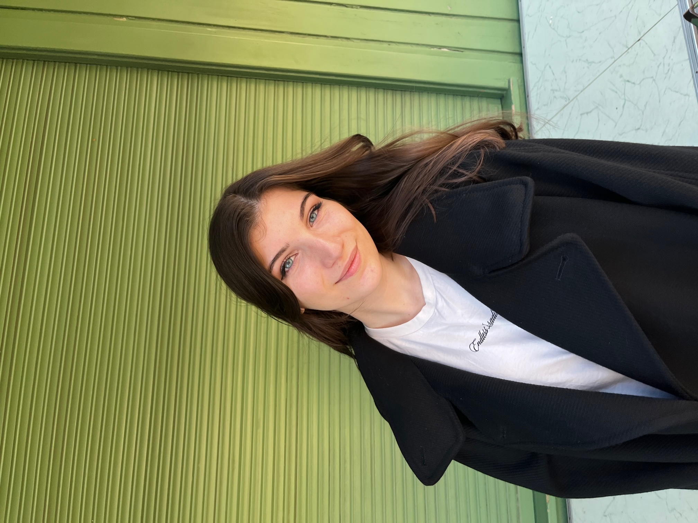

Name: Valeriya Ritz
Geburtsdatum: 07.03.2000
Geburtsland: Ukraine
Hobbys: Lesen, Tanzen, zurzeit viel Zeit mit Freunden verbringen
Lieblingsfarbe: ich finde alle Farben toll und einzigartig, die Kombination macht es aus
Sprachen: Englisch, Deutsch, Russsich, Ukrainisch, Spanisch und Italienisch
So sehe ich aus
